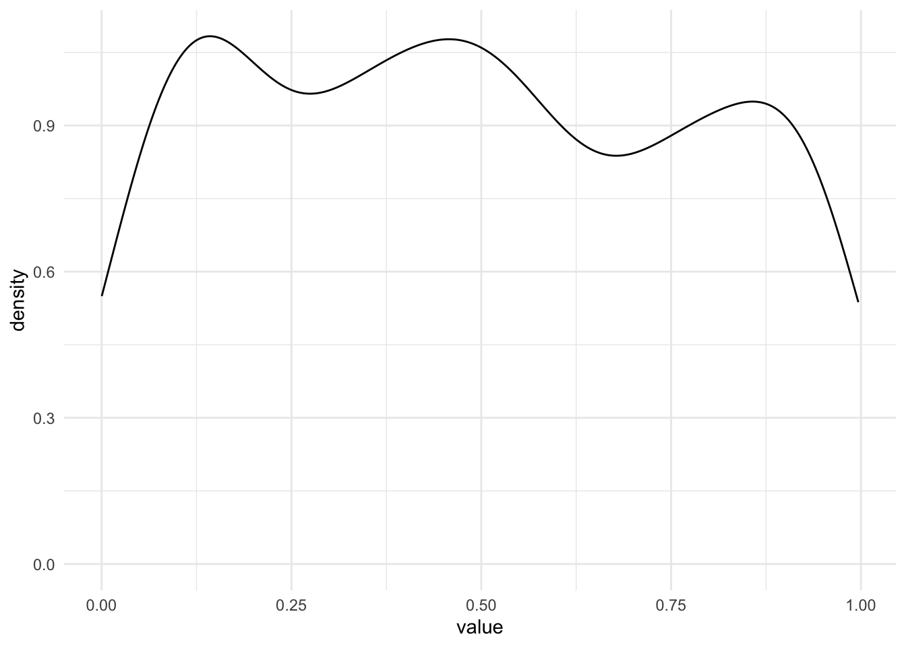

11 Проверка линейной свзяи
До этого мы рассматривали виды статистического анализа, когда нужно было сравнить средние значения в нескольких группах. Зависимая переменная всегда была количественная (ее среднее значение по группам мы и сравнивали), а независимая – категориальная, принимала конечное число значений, и каждое ее значение – отдельный уровень НП, отдельная группа.
Теперь мы переходим к статистическим критериям, которые используются, когда обе переменные, и ЗП, и НП – количественные.
11.1 Корреляционный анализ
Корреляция – это связь между переменными. Несмотря на то, что она называется так же, как и один из двух видов связи между переменными, корреляционную связь можно выявить с помощью в целом любых видов анализа – ведь когда мы получаем результаты статистических критериев, мы понимем только, что две переменные связаны (или нет), но не можем сделать вывод о том, причинно-следственная это связь или корреляционная.
Здесь речь пойдет именно про корреляционный анализ – специальный вид анализа для определения значимости линейной связи только между двумя количественными или порядковыми переменными.
Чтобы вывести формулу и смысл корреляции, познакомимся с понятием ковариации.
Ко-вариация (co-variance) – это мера со-изменчивости данных, показатель того, как наблюдения по двум количественным переменным меняются друг относительно друга.
 Картинка отсюда
Картинка отсюда
\(\text{cov}(x,y)=\frac{\sum_{i=1}^n (x_i - \bar x) (y_i - \bar y )}{n-1}\)
Шок-контент: попробуйте посчитать ковариацию переменной самой с собой и посмотрите на получившуюся формулу: ничего не напоминает?
Ковариация самой с собой
\(\text{cov}(x,x)=\frac{\sum_{i=1}^n (x_i - \bar x) (x_i - \bar x )}{n-1} = \frac{\sum_{i=1}^n (x_i - \bar x )^2}{n-1}\)
И это дисперсия!
Коэффициент корреляции – это показатель силы и направления связи между переменными. За силу связи отвечает модуль числа, за направление – знак корреляции. По сути, это ковариация переменных, но взвешенная на стандартные отклонения этих переменных. Это сделано для того, чтобы стандартизовать коэффициент, уйти от абсолютных значений к относительным и расположить этот коэффицент в границах [-1;1]. Для коэффициента корреляции Пирсона (корреляции двух количественных переменных):
\(\text{corr}(x,y) = r_{xy} = \frac{\text{cov(x, y)}}{sd_x sd_y} = \frac{\sum_{i=1}^n (x_i - \bar x) (y_i - \bar y )}{(n-1)sd_x sd_y}\)
Коэффициент детерминации – показатель, в какой степении изменчивость данных объясняется этой выбранной независимой переменной. В случае, если у нас только одна НП, то коэффициент детерминации – практически то же самое, что и корреляция, только взятая в квадрат:
\(R^2 = r_{xy}^2 = \frac{\text{cov(x, y)}}{sd_x sd_y} = \frac{\sum_{i=1}^n (x_i - \bar x) (y_i - \bar y )}{(n-1)sd_x sd_y}\)
 Пример с сайта https://rpsychologist.com/correlation/
Пример с сайта https://rpsychologist.com/correlation/
Игра по угадывание корреляции: http://guessthecorrelation.com/
11.1.1 Корреляционный тест
Гипотезы о наличии линейной связи между переменными проверяются при помощи корреляционного теста. Это точно такой же статистический критерий, как и те, что мы уже разобрали. По сути – ровно то же самое, что линейная регрессия с одной переменной. Корреляционный тест применяется, когда и ЗП, и НП являются количественными переменными либо выраженными в порядковкой шкале (но не номинативной). Для количественной шкалы обычно используется коэффициент корреляции Пирсона, для порядковой или для количественной переменной с малым числом наблюдений – коэффициент корреляции Спирмена.
Корреляционный тест использует – вы не поверите – уже знакомое нам T-распределение Стьюдента! (то есть, нам надо запомнить вообще всего два распределения: T-распределение и F-распределение)
Число степеней свободы вычисляется по формуле
\(df = n - 2\), n – число наблюдений
Нулевая и альтернативная гипотезы для корреляционного теста:
\(H_0\): \(r_{xy} = 0\)
\(H_1\): \(r_{xy} \neq 0\)
Как и остальные критерии, он имеет допущения.
11.1.2 Допущения для корреляционного теста
- ЗП и НП измерены в количественной или порядковой шкале
- Распределение НП по ЗП линейно – то есть нет выборосов, нет картины нелинейной взаимосвязи или скоплений данных в разных местах.
- (не обязательно) ЗП распределена нормально – обсуждали эту проверку здесь
Примеры, как может выглядеть нелинейное распределение:
 Картинка из википедии про корреляцию
Картинка из википедии про корреляцию
11.1.3 Непараметрические аналоги
Если ЗП сильно отличается от нормального распределения, или выборка мала, или ЗП закодирована в порядковой шкале – в корреляционном тесте используется коэффициент корреляции Спирмена вместо Пирсона, и это единственное различие.
Есть еще тау-Кендалла, это почти то же самое, что и корреляция Спирмена, но мы не будем ее рассматривать, так как она применяется крайне редко.

11.1.4 Расчет корреляционного теста
Проведем тест для следующей гипотезы.
Чем ниже студенты оценивают качество семейных отношений famrel, тем выше они отмечают частоту употребления алкоголя Walc
| student | school | sex | age | address | famsize | Pstatus | Medu | Fedu | Mjob | Fjob | reason | guardian | traveltime | studytime | failures | schoolsup | famsup | paid_mat | activities | nursery | higher | internet | romantic | famrel | freetime | goout | Dalc | Walc | health | absences_mat | G1_mat | G2_mat | G3_mat | paid_por | absences_por | G1_por | G2_por | G3_por | G_mat | G_por | absences_mat_groups | absences_por_groups |
|---|---|---|---|---|---|---|---|---|---|---|---|---|---|---|---|---|---|---|---|---|---|---|---|---|---|---|---|---|---|---|---|---|---|---|---|---|---|---|---|---|---|---|
| id1 | GP | F | 18 | U | GT3 | A | 4 | 4 | at_home | teacher | course | mother | 2 | 2 | 0 | yes | no | no | no | yes | yes | no | no | 4 | 3 | 4 | 1 | 1 | 3 | 6 | 5 | 6 | 6 | no | 4 | 0 | 11 | 11 | 5.666667 | 7.333333 | middle | less |
| id2 | GP | F | 17 | U | GT3 | T | 1 | 1 | at_home | other | course | father | 1 | 2 | 0 | no | yes | no | no | no | yes | yes | no | 5 | 3 | 3 | 1 | 1 | 3 | 4 | 5 | 5 | 6 | no | 2 | 9 | 11 | 11 | 5.333333 | 10.333333 | less | less |
| id4 | GP | F | 15 | U | GT3 | T | 4 | 2 | health | services | home | mother | 1 | 3 | 0 | no | yes | yes | yes | yes | yes | yes | yes | 3 | 2 | 2 | 1 | 1 | 5 | 2 | 15 | 14 | 15 | no | 0 | 14 | 14 | 14 | 14.666667 | 14.000000 | less | less |
| id5 | GP | F | 16 | U | GT3 | T | 3 | 3 | other | other | home | father | 1 | 2 | 0 | no | yes | yes | no | yes | yes | no | no | 4 | 3 | 2 | 1 | 2 | 5 | 4 | 6 | 10 | 10 | no | 0 | 11 | 13 | 13 | 8.666667 | 12.333333 | less | less |
| id6 | GP | M | 16 | U | LE3 | T | 4 | 3 | services | other | reputation | mother | 1 | 2 | 0 | no | yes | yes | yes | yes | yes | yes | no | 5 | 4 | 2 | 1 | 2 | 5 | 10 | 15 | 15 | 15 | no | 6 | 12 | 12 | 13 | 15.000000 | 12.333333 | middle | middle |
| id7 | GP | M | 16 | U | LE3 | T | 2 | 2 | other | other | home | mother | 1 | 2 | 0 | no | no | no | no | yes | yes | yes | no | 4 | 4 | 4 | 1 | 1 | 3 | 0 | 12 | 12 | 11 | no | 0 | 13 | 12 | 13 | 11.666667 | 12.666667 | less | less |
| id8 | GP | F | 17 | U | GT3 | A | 4 | 4 | other | teacher | home | mother | 2 | 2 | 0 | yes | yes | no | no | yes | yes | no | no | 4 | 1 | 4 | 1 | 1 | 1 | 6 | 6 | 5 | 6 | no | 2 | 10 | 13 | 13 | 5.666667 | 12.000000 | middle | less |
| id9 | GP | M | 15 | U | LE3 | A | 3 | 2 | services | other | home | mother | 1 | 2 | 0 | no | yes | yes | no | yes | yes | yes | no | 4 | 2 | 2 | 1 | 1 | 1 | 0 | 16 | 18 | 19 | no | 0 | 15 | 16 | 17 | 17.666667 | 16.000000 | less | less |
| id10 | GP | M | 15 | U | GT3 | T | 3 | 4 | other | other | home | mother | 1 | 2 | 0 | no | yes | yes | yes | yes | yes | yes | no | 5 | 5 | 1 | 1 | 1 | 5 | 0 | 14 | 15 | 15 | no | 0 | 12 | 12 | 13 | 14.666667 | 12.333333 | less | less |
| id11 | GP | F | 15 | U | GT3 | T | 4 | 4 | teacher | health | reputation | mother | 1 | 2 | 0 | no | yes | yes | no | yes | yes | yes | no | 3 | 3 | 3 | 1 | 2 | 2 | 0 | 10 | 8 | 9 | no | 2 | 14 | 14 | 14 | 9.000000 | 14.000000 | less | less |
Пойдем также по алгоритму.
ЗП – порядковая, НП – порядковая. Наша гипотеза не о сравнении групп между собой, а то, что эти переменные коррелируют, между ними есть линейная связь.
Так как ЗП и НП порядковые, мне нужно использовать непараметрический аналог корреляциии Пирсона – ранговую корреляцию Спирмена (либо порядковую логистическую регрессию (если я хочу, чтобы связь имела предсказательную силу), но об этом не в этот раз).
##
## Spearman's rank correlation rho
##
## data: students$famrel and students$Walc
## S = 6173557, p-value = 0.0196
## alternative hypothesis: true rho is not equal to 0
## sample estimates:
## rho
## -0.130423Если бы у нас были две количественные переменные, то мы бы просто визуализировали их диаграммой рассеяния с уже привычной линией посреди точек. Например, такой:
 Картинка отсюда
Картинка отсюда
Но у нас две порядковые переменные, поэтому диаграмма рассеяния даст непонятный вариант. Поэтому будем использовать мозаичный плот: размер плитки отражает частоту совпадения таких значений двух переменных.

Другой вариант – хитмеп, тут размеры фиксированные, а за частоту совпадений отвечает цвет.
 ### Интерпретация результатов
### Интерпретация результатов
Важно, что при очень большой выборке даже совсем слабая корреляционная связь будет достигать статистической значимости!
Размеры эффекта при корреляции в сравнении с другими статистиками
Еще один важный момент – в корреляционном тесте, даже при правильно простроенном эксперименте, мы не сможем заключить причинно-следственную связь. Возможна ситуация

11.1.5 Корреляционные матрицы
Часто встречется анализ корреляционных матриц – когда корреляции вычисляются попарно для каждой матрицы переменных. Это можно встретить, например, при корреляции опросников: допустим, есть опросник О1 и О2. В опроснике О1 есть субшкалы С11, С12, С13, С14, С15, а в О2 соответственно – С21, С22, С23, С24, С25. Тогда мы можем построить корреляционную матрицу для субшкал этих опросников.

11.2 Линейный регрессионный анализ
Линейная регрессия – это ровно та же известная нам ANOVA, только если заменить категориальные НП на количественные!
А еще линейная регрессия – это то же самое, что корреляция, только для нескольких НП. Совмещая ANOVA и корреляционный анализ, получили линейный регрессионный!
Регрессионный анализ – довольная мощная штука, потому что здесь мы впервые начинаем говорить о предсказательной функции анализа. Выходит, что регрессионный анализ может применяться:
- Для проверки гипотез о наличии линейной связи между количественными или порядковыми переменными
- Для предсказания значений ЗП за пределами имеющихся данных
Пока что нас интересует первая из этих функций, хотя очень часто линейный регрессионный анализ интересен именно с точки зрения второй.
Регрессионный анализ строится на построении регрессионной прямой: любая прямая имеет вид \(y = kx + b\), в регрессионном анализе это уравнение часто записывается как \(y = b_0 + b_1x\). И задача регрессионного анализа – это определение и тестирование коэффициентов \(b_0\) и \(b_1\) регрессии.
11.2.1 Коэффициенты регрессии
Уравнение регрессионной прямой:\(y = b_o + b_1x\)

Есть несколько формул для вычисления коэффициентов линейной регрессии, но все они взаимовычисляемы.
- Коэффициент \(b_1\) отвечает на наклон прямой (slope)
- Коэффициент \(b_0\) отвечает за смещение прямой вдоль оси y (intercept)
- При подсчете коэффициентов первым высчитывается \(b_1\), и он зависит от величины вариативности данных по переменным x и y (стандартных отклонений или дисперсий) и в случае равной вариативности является коэффициентом корреляции \(r_{xy}\)
Коэффициенты считаются таким образом, чтобы сумма квадратов остатков была минимальна. Это называется методом наименьших квадратов.
Остатки – это отличия исходных данных от предсказанных нашей моделью, то, что “остается”:\(e = y - \hat y\)
При построении регрессионной прямой нам надо стремиться к уменьшению этой суммы:\(\sum_{i=1}^{n} e^2 = \sum_{i=1}^{n}(y - \hat y)^2\)

Формулы коэффициентов по методу наименьших квадратов:
\(b_{1_{xy}} = \frac{sd_y}{sd_x} r_{xy}\)
\(b_o = \bar y - b_{1_{xy}}\bar x\)
11.2.2 Регрессионный анализ (тестирование коэффициентов регрессии)
Регрессионный анализ принадлежит семейству Т-распределения, так же, как и корреляционный анализ. Число степеней свободы рассчитывает по формуле:
\(df = n - 2\), n – число наблюдений
Нулевая и альтернативная гипотезы:
\(H_0\): \(b_{1_{xy}} = 0\)
\(H_1\): \(b_{1_{xy}} \neq 0\)
Ключевой статистикой является Т-значение, оно вычисляется по формуле:
\(T = \frac{b_1}{se}\)
Еще одно, если не самое важное значение для линейной регрессии – это коэффициент детерминации. Мы уже сталкивались с ним, когда говорили про ANOVA и корреляцию:\(R^2 = \frac{SSE}{SST} = 1 - \frac{SSR}{SST}\)
\(R^2 = r_{xy}^2 = \frac{\text{cov(x, y)}}{sd_x sd_y} = \frac{\sum_{i=1}^n (x_i - \bar x) (y_i - \bar y )}{(n-1)sd_x sd_y}\)
В линейной регрессии, так же, как и в ANOVA, коэффициент детерминации определяет уровень корреляции между исходными значениями переменной \(y\) и предсказанными \(\hat y\). По сути, он говорит о проценте объясненной дисперсии, то есть как хорошо наша регрессионная модель объясняет изменчивость зависимой переменной.
Из формулировки видно, что эту величину можно рассматривать как размер эффекта – и это ни что иное, как уже знакомая нам \(\eta^2\)
\(\eta^2 = \frac{SSE}{SST}\)
!
\(R^2 = \frac{SSE}{SST} = 1 - \frac{SSR}{SST}\)
Множественный регрессионный анализ – подразумевает все то же самое, только появляются новые
11.2.3 Допущения для регрессионного анализа
(ЗП и НП измерены в количественной или порядковой шкале)
- Распределение НП по ЗП линейно – то есть нет выборосов, нет картины нелинейной взаимосвязи или скоплений данных в разных местах.
- Остатки (residuals) распределены нормально – все то же самое, как здесь, только для остатков (график плотности вероятности или QQ-plot)
- Остатки (residuals) варьируются примерно одинаково вдоль всей прямой – гомогенность (или гомоскедастичность, homoscedasticity) остатков. Проверяется тестом Левеня (Levene’s Test of Homogeneity of Variance)
- Для множественной линейной регрессии – отсутствие мультиколлинеарности (сильной корреляции между независимыми переменными)
11.2.4 Расчет регрессионного анализа
students %>%
ggplot(aes(x=G_por, y = G_mat)) +
geom_point(aes(colour = G_por)) +
geom_smooth(method="lm") +
scale_color_viridis() +
theme_minimal()## `geom_smooth()` using formula 'y ~ x'
##
## Call:
## lm(formula = students$G_mat ~ students$G_por)
##
## Residuals:
## Min 1Q Median 3Q Max
## -10.6067 -1.7271 -0.0795 1.8674 8.3760
##
## Coefficients:
## Estimate Std. Error t value Pr(>|t|)
## (Intercept) 0.60914 0.82824 0.735 0.463
## students$G_por 0.83704 0.06439 12.999 <2e-16 ***
## ---
## Signif. codes: 0 '***' 0.001 '**' 0.01 '*' 0.05 '.' 0.1 ' ' 1
##
## Residual standard error: 2.881 on 318 degrees of freedom
## Multiple R-squared: 0.347, Adjusted R-squared: 0.3449
## F-statistic: 169 on 1 and 318 DF, p-value: < 2.2e-16##
## Call:
## lm(formula = students$G_mat ~ students$G_por + students$G1_mat)
##
## Residuals:
## Min 1Q Median 3Q Max
## -7.3048 -0.5550 0.0934 0.6501 2.9390
##
## Coefficients:
## Estimate Std. Error t value Pr(>|t|)
## (Intercept) -0.94794 0.38461 -2.465 0.0142 *
## students$G_por 0.06650 0.03722 1.787 0.0750 .
## students$G1_mat 0.99894 0.02910 34.330 <2e-16 ***
## ---
## Signif. codes: 0 '***' 0.001 '**' 0.01 '*' 0.05 '.' 0.1 ' ' 1
##
## Residual standard error: 1.329 on 317 degrees of freedom
## Multiple R-squared: 0.8616, Adjusted R-squared: 0.8607
## F-statistic: 986.6 on 2 and 317 DF, p-value: < 2.2e-16